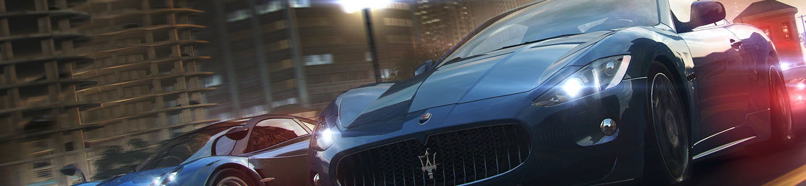
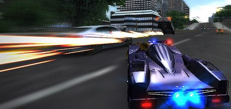

The Racing game genre orginates from the late 1960s. It started as arcade games
About the Racing game genre
About the Racing game genre
The racing video game genre is the genre of video games, either in the first-person or third-person perspective, in which the player partakes in a racing competition with any type of land, water, air or space vehicles. They may be based on anything from real-world racing leagues to entirely fantastical settings. In general, they can be distributed along a spectrum anywhere between hardcore simulations, and simpler arcade racing games. Racing games may also fall under the category of sports games. The first racing game was "Grand Prix" realeased in 1969 by SEGA. Throughout the 1970s and 80s, more and more racing games came into the arcades. Arcade racing simulations are still made today.
